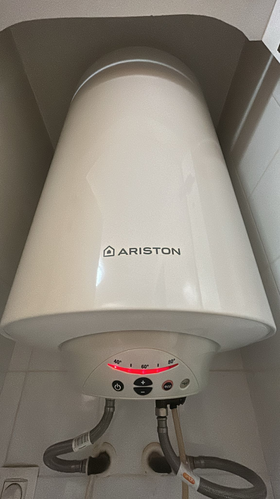

Trabajos de Fontanería Realizados - Torrevieja
Our Works - Virtual Plumber Torrevieja

Termo Slim 50L instalado en Torrevieja
Instalación profesional de un termo eléctrico Slim de 50 litros en Torrevieja, garantizando eficiencia energética, seguridad, y suministro constante de agua caliente. Se han seguido todas las normas de instalación de Fontanería Eduardo Quirós, asegurando durabilidad y mantenimiento sencillo. Este trabajo incluye revisión de conexiones eléctricas, aislamiento térmico y control de presión para evitar fugas y prolongar la vida útil del termo.
Professional installation of a 50L Slim electric water heater in Torrevieja
Safe and efficient installation following the highest plumbing standards. Energy-efficient, reliable hot water supply, proper electrical connections, and leak-proof setup ensure long-term performance and safety.

Termo Simat 50L instalado en Torrevieja
Instalación de termo eléctrico Simat de 50 litros, con enfoque en rendimiento y durabilidad. Se han revisado todos los elementos de seguridad y presión, conectando correctamente a la red eléctrica y garantizando un flujo constante de agua caliente en la vivienda. Servicio profesional de Fontanería Eduardo Quirós, cumpliendo normativas locales y estándares de calidad.
Installation of a 50L Simat electric water heater in Torrevieja
Professional setup ensures reliable performance, long-lasting durability, and continuous hot water supply. All safety and pressure measures carefully followed for optimal operation.

Reparación termo 50L en Guardamar
Servicio urgente de reparación de termo eléctrico de 50 litros en Guardamar, restaurando el suministro de agua caliente rápidamente. Incluye diagnóstico completo, sustitución de elementos defectuosos y prueba de seguridad y presión. La intervención está realizada por Fontanería Eduardo Quirós, especialista en soluciones rápidas y eficientes.
Urgent repair service of a 50L electric water heater in Guardamar
Fast and professional repair, restoring hot water supply safely and reliably. Diagnosis, replacement of faulty components, and pressure testing ensure optimal functionality.

Reparación de cisterna en Torrevieja
Reparación rápida y eficaz de cisterna de inodoro en Torrevieja, solucionando fugas, bloqueos y problemas de funcionamiento. Se revisan todos los mecanismos internos, llaves de paso y nivel de agua, garantizando un rendimiento perfecto. Fontanería Eduardo Quirós aplica experiencia profesional para que el servicio sea seguro, duradero y limpio.
Fast and effective toilet cistern repair in Torrevieja
Complete repair of internal mechanisms, water valves, and proper water level adjustment. Professional, clean, and durable service ensuring leak-free operation.

Instalación de inodoro en La Zenia
Instalación profesional de inodoro en La Zenia, garantizando seguridad, higiene y confort. Se incluyen nivelación perfecta, conexión de agua y revisión de presión. Servicio de Fontanería Eduardo Quirós especializado en baños completos, con garantía de funcionamiento y cumplimiento de normativas locales.
Professional toilet installation in La Zenia
Accurate leveling, water connections, pressure testing, and professional installation ensure comfort, hygiene, and long-term performance.

Instalación de grifo en Torrevieja
Instalación de grifo de fregadero en Torrevieja, asegurando un flujo constante de agua sin fugas. Se revisan conexiones de agua, presión y sellado para máxima seguridad y durabilidad. Fontanería Eduardo Quirós garantiza un servicio profesional y confiable, cumpliendo con todas las normas de instalación.
Sink faucet installation in Torrevieja
Professional installation with leak-proof connections and constant water flow. Durable, reliable, and safe service by Fontanería Eduardo Quirós.